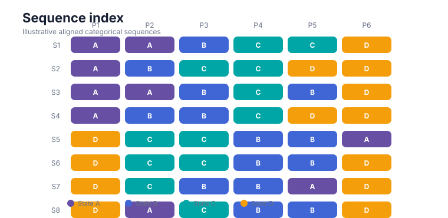
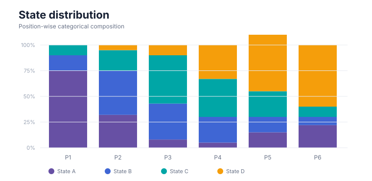
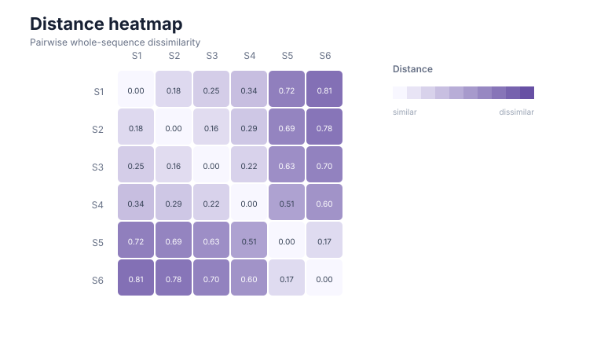
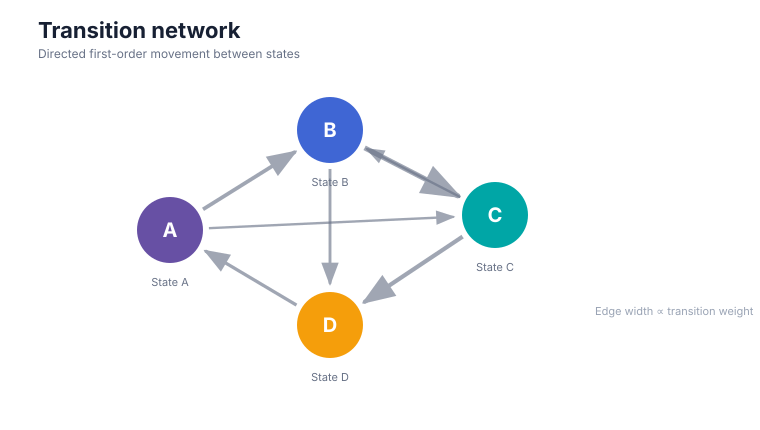

See sequence structure.
Model what changes.
A parity-first Python toolkit for ordered categorical sequences and scanpaths: audit data, discover motifs, compare trajectories, model transitions and latent states, test group structure, and report every analytical choice transparently.
Start from the research question
Choose the analysis by what you need to learn.
Move from a substantive question to an auditable method instead of starting from a function name.
Can I trust the sequence data?
Audit order, missing states, duplicated positions, duration fields, metadata, and explicit preparation policies.
Validate & prepare → 02What patterns recur?
Summarise paths, occupancy, consensus, contiguous motifs, non-contiguous subsequences, and transition structure.
Describe structure → 03Which sequences are similar?
Use edit, LCS, optimal-matching, or transition-profile distances, then cluster and test stability.
Compare trajectories → 04How do states connect?
Build transition networks, inspect centrality and communities, fit higher-order models, and predict next states.
Model transitions → 05Is there latent structure?
Fit categorical, mixture, multichannel, and covariate-dependent HMM workflows with explicit convergence boundaries.
Fit latent models → 06Do groups differ defensibly?
Declare the comparison design and use design-aware randomization rather than over-interpreting descriptive differences.
Run inference →A defensible workflow
From raw events to a reportable result.
Every stage keeps assumptions and transformations visible.
A small API, composed into a full workflow
The same prepared sequence object can feed descriptive summaries, distances, networks, latent models, inference, and visualisation.
Quickstart →import gp3sequencespy as g
validation = g.validate_sequence_data(data)
prepared = g.prepare_sequence_data(data)
states = g.summarise_sequence_states(prepared.data)
distance = g.compute_sequence_distance(
prepared.data,
method="lcs",
)
network = g.create_transition_network(
prepared.data,
normalise="from",
)See the structure
Visual outputs that stay connected to the method.
Use plots as analytical summaries, not decoration. Each gallery entry links back to the generating function and interpretation notes.

Sequence indexInspect complete paths and between-sequence structure
State distributionSee occupancy change over sequence position
Distance heatmapInspect similarity and cluster separation
Transition networkMap state-to-state structure and directional flowEvidence, not just features
Built around explicit scientific contracts.
The Python implementation is tested against a frozen R reference and exposes its translation boundaries instead of hiding them.
Frozen behavior. Audited translation. Python-native integration.
gp3sequencespy implements the frozen gp3sequences 0.3.0 public contract. Public signatures, translated test blocks, deterministic oracles, and deliberate R→Python boundaries are documented as release evidence.
Coming from gp3sequences in R?
Use the translation guide to map function names, return structures, plotting conventions, and documented semantic differences.
Open the R → Python guide →Already know the method?
Jump directly to the frozen public API and inspect signatures, parameters, return objects, and implementation notes.
Browse all public functions →Sequence structure is not a psychological state.
Sequence structure does not independently establish attention, cognition, emotion, comprehension, personality, intention, deception, diagnosis, or causality. Observational group contrasts remain associational unless a defensible randomized design supports causal interpretation.
Start small. Keep every decision visible.
Install 0.1.2, validate a three-column sequence table, and expand only when the research question requires it.